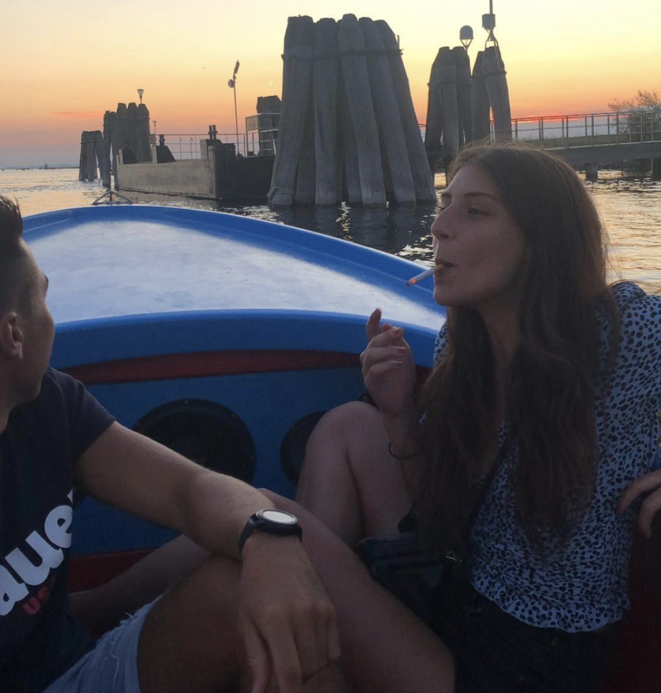

Your friend Buba will give you a boatbarca ride until Lido to you, Giulia and Manuel. They've both been your friend since you were a kid and you love spending time togetherinsieme .
Lido is always a good choice for an afternoon and a dinner. It is bigger than Pellestrina, with a lot more choice of thingscose to do, but it has the same peace and tranquillity than an island can offer you.
In Lido there is what is probably your - and you friend's - favoritepreferito place to have dinner during summerestate . It is called "El Pecador".
"El Pecador" is a stand inside an old double deck London bus where you usually have amazing hamburgers. It is an extremely friendlyamichevole place, with great food and chilling music.
Click on "Final" if you want to continue meeting people and visiting Pellestrina.
Or click "Go back" if you want to relive some island experiences.